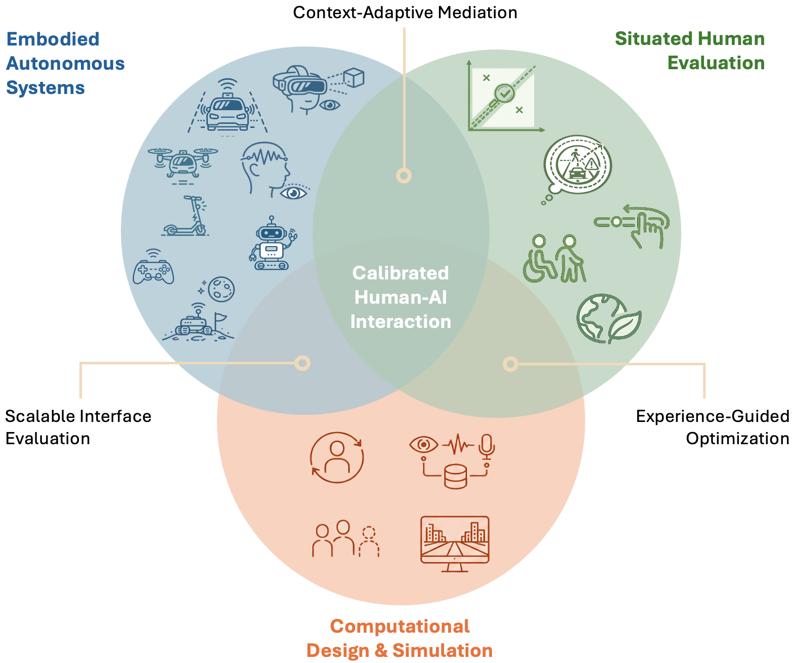

I am currently on the faculty job market. This page describes the research directions, thesis opportunities, and ways of working I am excited to supervise and collaborate on in a future faculty position.

Emerging interaction contexts
I study interactive systems in contexts where interfaces affect what people perceive, understand, and do under novel technical and environmental constraints.
- Automated vehicles and future mobility: Interfaces that communicate capability, uncertainty, intent, and failure in automated cars, micromobility, and urban air mobility.
- Spatial interaction: Systems that augment, filter, or restructure perception in augmented reality, virtual reality, and dynamic physical environments.
- Robots, teleoperation, and shared human-machine environments: Interfaces for interacting with autonomous and semi-autonomous machines in ways that make their behaviour legible, controllable, and usable.
- Brain-computer interfaces, eye tracking, and novel embodiment paradigms: New forms of input, feedback, and embodiment that extend how users control and experience interactive systems.
- Serious games and gameful interactive systems: Interactive experiences that use play, immersion, and scenario-based design to study behaviour and support learning.
- Space and extreme-environment interaction: Interfaces for settings where conventional assumptions about perception and action no longer hold.
Human experience alignment
I investigate how interactive systems can align with human experience outcomes that determine whether emerging technologies are trusted, usable, safe, and acceptable in practice.
- User state calibration: Designs that help users form appropriate expectations of what a system can perceive, predict, and do.
- Situation awareness: Interfaces that support understanding and performance without overwhelming users.
- Agency, control, and contestability: Systems that keep users meaningfully involved when automation adapts, intervenes, or makes consequential decisions.
- Accessibility, inclusion, and diverse user needs: Designs that fit users with different abilities, backgrounds, and situational constraints.
- Sustainability and long-term societal impact: Interactive systems that support environmentally and socially responsible behaviour.
Computational design and simulation
I develop computational methods that make interactive systems designable, optimizable, and testable beyond what manual iteration can support.
- Human-in-the-loop optimization: Methods that use human feedback to search large design spaces and personalize interface parameters.
- Implicit and multimodal feedback loops: Systems that infer design-relevant signals from behaviour, physiology, interaction, and context.
- User simulation and synthetic users: Computational models that approximate human behaviour to pretest interface concepts.
- Simulation-based evaluation of interaction concepts: Virtual and computational environments for testing systems that are difficult, unsafe, or premature to study in the real world.
Build, study, explain
I like projects that combine a meaningful interaction problem, a working prototype, and a careful empirical study. Strong projects usually lead to both a clear research contribution and a reusable artifact, design space, tool, or dataset.
A good fit to work with me does not require having all skills already. It does require curiosity about people and systems, comfort with iterative work, and willingness to connect design claims to evidence.
Strong projects usually begin with a solid grounding in HCI theory, methods, and related work. The following readings are useful starting points:
HCI foundations
- Stanford HCI Qual Exam Reading List: Google Doc
- Introduction to Human-Computer Interaction (by Kasper Hornbæk, Per Ola Kristensson, and Antti Oulasvirta): Oxford University Press (open access)
- The Encyclopedia of Human–Computer Interaction: Interaction Design Foundation
- The Design of Everyday Things (by Don Norman): Nielsen Norman Group
- Foundations and Trends® in Human–Computer Interaction series: Emerald Publishing
Research methods and evidence
- Research Contributions in Human-Computer Interaction (by Jacob O. Wobbrock and Julie A. Kientz): ACM DL
- Research Methods in Human-Computer Interaction (by Jonathan Lazar, Jinjuan Heidi Feng, and Harry Hochheiser): Science Direct
- Modern Statistical Methods for HCI (edited by Judy Robertson and Maurits Kaptein): Springer Nature
Interaction and computational design
- Pick, Click, Flick!: The Story of Interaction Techniques (by Brad A. Myers): ACM DL
- Computational Interaction (edited by Antti Oulasvirta, Per Ola Kristensson, and Xiaojun Bi): Oxford University Press
- Bayesian Methods for Interaction and Design (edited by John H. Williamson, Antti Oulasvirta, Per Ola Kristensson, and Nikola Banovic): Cambridge University Press
- 3D User Interfaces: Theory and Practice (by Joseph J. LaViola Jr., Ernst Kruijff, Ryan P. McMahan, Doug A. Bowman, and Ivan P. Poupyrev): Google Books
Email pascal.jansen@uni-ulm.de with your background, the topic you are interested in, and one paper, project, or course from this website that connects to your idea.